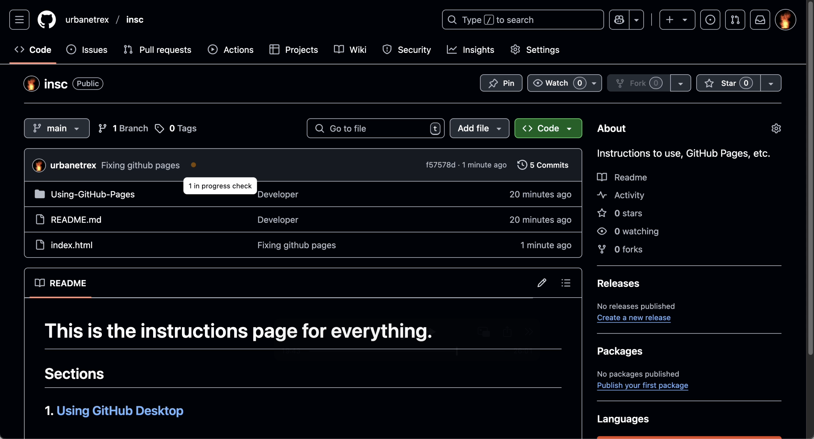

Create a new repository on GitHub by clicking the "New" button on your repositories page.
Make sure to give your repository a name and choose whether it should be public or private. Usually, I will select Public for repos for publishing to GitHub Pages.
Here, I created a repo...
index.htmlCreate an index.html file in your repository. This file will serve as the main page for your GitHub Pages site.
Remember to push your changes to GitHub after creating the index.html file.
Go to the repository settings and scroll down to the "GitHub Pages" section. Select the branch you want to use for GitHub Pages.
After configuring GitHub Pages, your site will be available at https://<your-username>.github.io/<your-repo-name>/.
For example, if your username is johnDoe and your repository name is my-site, your site will be at https://johnDoe.github.io/my-site/.
If the site didn't publish, push another commit to your repo.
Sometimes, GitHub Pages requires a new commit to trigger the build process.
Make a small change to your index.html file, commit it, and push it to the repository.
For example, you can add a comment or change some text in the file.
After pushing the commit, wait a few minutes and then check your GitHub Pages URL again.
If it still doesn't work, ensure that your repository is public and that the index.html file is in the root directory of the branch you selected for GitHub Pages.
Congratulations on setting up your GitHub Pages site!
You can now share your site with others or continue to develop it further.
Feel free to explore more features of GitHub Pages!